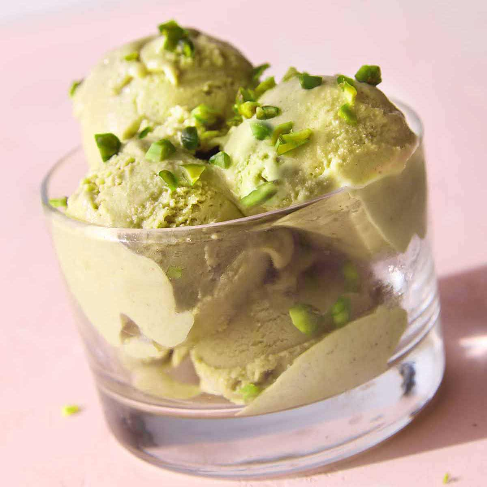

How to Make Good Gelato
Gelato is a frozen dessert of Italian origin, similar to ice cream. In fact, "Gelato" simply means "ice cream" in Italian. But unlike its American cousin, gelato has a lower fat content, higher density, and smaller ice crystals which result in a silkier texture and more intense flavor.
This website will guide you through the essential techniques and knowledge needed to create authentic Italian gelato at home.